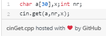
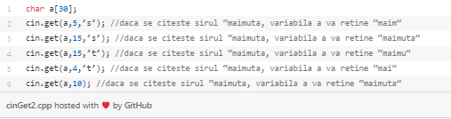
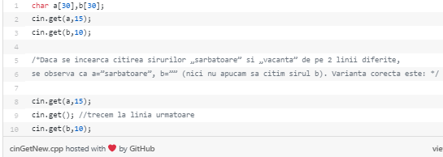

a) Citirea unui șir de caractere se poate face ca citirea oricărui tablou, într-un for, caracter cu caracter (deși nu este recomandată).
Se poate face pur și simplu, folosind ‘cin>>’ . Caracterul nul este adaugat automat. Dezavantajul este că în acest fel nu se pot citi șiruri care conțin mai multe cuvinte separate prin spații. Citirea șirului se sfarșește la întalnirea primului caracter blank (de ex, dacă se citește “ora de informatică”, variabila c va reține numai “ora”).

|
b) Se poate folosi o functie specială pentru citirea șirurilor de caractere, inclusă în biblioteca ,,string.h" (varianta recomandata).
Funcția ‘cin.get’ citește un șir de caractere sau până când au fost citite nr-1 caractere, sau dacă s-a întalnit caracterul x. Al treilea parametru poate lipsi, caz în care el este implicit caracterul ‟\n‟ (new line). Sunt citite și caracterele albe, caracterul nul este inserat automat iar caracterul transmis ca ultim parametru nu este inserat în șir.

 |
| ! Observație: În cazul utilizării repetate a funcției cin.get(a,nr,x), după fiecare folosire trebuie citit caracterul de la sfarșitul fiecărui șir , adică ‟\n‟ (în caz contrar, acest caracter va fi încărcat la începutul următorului șir, a cărui citire se termină la caracterul Enter, deci citirea celui de-al doilea șir se termină înainte de a începe, iar al doilea șir va fi șirul vid). Această citire a caracterului ‟\n‟ se realizează folosind cin.get() fară parametri. |
 |